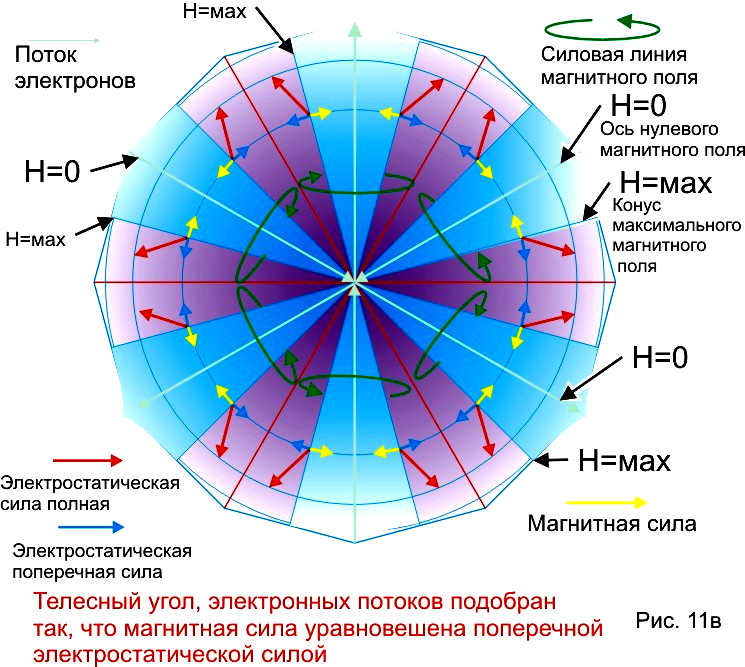

Очень важно заметить что, электроны не могут пройти через центр ячейки, не меняя направления, и если проследить за траекторией отдельного электрона, выйдет случайная, ломанная траектория, точки излома которой, будут совпадать с центрами ячеек. Это обусловлено тем, что электрон может сколь угодно близко подойти к центру ячейки, но не может преодолеть этот центр и продолжить движение по прямой. Двигаясь по входящей магнитной трубке, электрон подлетает к центру, затормаживается в электростатическом поле и отбрасывается, этим же полем назад. Но двигаться в обратном направлении по этой же магнитной трубке он уже не может. Магнитное поле входящей трубки немедленно вытолкнет его наружу и он неминуемо будет захвачен в одну из трех, выводящих трубок (на плоском рисунке таких трубок две). В итоге, выходит некий парадокс - электроны в кристаллической плазме движутся по ломанной и случайной траектории, упруго отскакивая от центров ячеек, но электронные токи, ими же сформированные, имеют строго упорядоченную, стабильную структуру.
Отскок электрона от центра ячейки, только на первый взгляд носит случайный характер, в действительности это очень тонкая и точная система самонаведения входящего потока электронов на абсолютный центр ячейки.
Работает эта система следующим образом. См. (Рис. 4) Если острие входящей магнитной трубки направлено точно в центр, то все электроны которые идут по этой трубке, будут при отскоке делится на три равные части и уходить по трем выходящим трубкам. Но если острие смещено от центра то, отскок электронов уже не будет делится на равные части. Произойдет перераспределение в выходящих потоках и магнитное поле усилится с той стороны, куда смещена ось входящего потока. Образовавшийся таким образом перекос в магнитном поле, выправит ошибку и направит входящий поток точно в цель.
. На М10В1 и М10В2 показан случай, когда, несколько пучков направлены в одну точку со всех сторон. Рассеивающий заряд, в таком случае, формируется самопроизвольно из замедленных электронов. Каждый пучок, под воздействием вышеописанной закономерности, стремится подкорректировать направление своего движения так, чтобы двигаться к центру системы более точно, а это и приводит к самопроизвольной центровке, сформировавшегося объемного отрицательного заряда.
В первый момент времени Т1 (См. Рис. 6), в ячейках формируются и неподвижно зависают отрицательные объемные заряды из заторможенных электронов. На рисунке показана, одна из ячеек в разные моменты времени. В момент времени (Т1) в ячейке появляется объемный заряд шарообразной формы (первая ступень сжатия электронов). Его электрический потенциал, примерно равен первоначальной кинетической энергии электронов, и это равенство формируется при помощи магнитного поля, которое противодействует силам электростатического расталкивания в пучке, и все время стремится направить (подвернуть) вектор кинетической энергии каждого электрона, на встречу электростатической силе торможения, и заставляет таким образом электроны, полностью расходовать свою кинетическую энергию. Чем больше ток тем сильнее этот эффект (МГД – торможения). (См. Рис. 5)
Однако нужно обратить особое внимание на то, что в этом объемном заряде есть уплотнения в тех местах, где с ним соприкасаются потоки электронов. Формирует эти уплотнения магнитное поле. На электроны летящие к центру ячейки, одновременно действуют две силы. Одна магнитная, которая поджимает поток электронов к собственной оси , другая электрическая, которая тормозит весь поток. На первом этапе, когда электроны имеют максимальную скорость, магнитная сила выступает в роли собирающей линзы. На втором этапе, когда скорость электронов минимальна, главную роль играет сила электростатического расталкивания и формируется рассеивающая линза. В итоге выходит, что объемный заряд, сформированный этими потоками, имеет равномерно расположенные на поверхности электростатические рассеивающие линзы, расположенные строго по центру магнитных трубок. Для электронов это рассеивающие линзы, а вот для ионов это электростатические собирающие линзы.
На отрицательный объемный заряд, конечно же реагируют ионы. Со всех сторон, положительные частицы с ускорение начинают двигаться к отрицательному заряду , который неподвижно висит в центре ячейки. Достигнув его набирают кинетическую энергию равную его потенциалу, а следовательно и энергию равную, первоначальной энергии электронов. На максимально скорости ионы проходят электростатические собирающие линзы и продолжают движении к центру уже по инерции и интенсивно тормозятся собственным объемным зарядом.. Пройдя примерно половину, оставшегося расстояния до центра, момент времени (Т2), ионы почти полностью потеряют скорость и сформируют там, объемный положительный заряд (первая ступень сжатия ионов). Его потенциал будет равен, их (ионов)максимальной кинетической энергии, а следовательно будет равен, и максимальной энергии электронов, и потенциалу первого отрицательного объемного заряда. Вместе с тем, образовавший положительный электрический заряд будет намного меньше, чем первый отрицательный объемный заряд, и поэтому не сможет его скомпенсировать. Таким образом в момент времени Т2, в ячейке формируется шаровой конденсатор, заряженный до напряжения равного кинетической энергии части выраженной в электрон вольтах. Ионы движутся намного медленнее электронов, и поэтому как только появится первый положительный заряд, электроны тут же поменяют свои траектории, и сформируется система (Т3). Теперь электроны затормаживают на первой отрицательной сфере, но не отскакивают от нее, а с ускорением продолжают движение еще ближе к центру ячейки. На максимально скорости входят в первую положительную сферу, проходят еще половину оставшегося пути к центру, и формирую второй отрицательный объемный заряд (вторая ступень сжатия электронов). По форме он точная копия первого, и имеет аналогичный набор электростатических линз, его потенциал такой же, но радиус в 4 раза меньше, чем радиус первого отрицательного, а напряженность электрического поля, на его поверхности, в 4 раза выше. В те же 4 раза, имеет большую напряженность и магнитное поле, окружающее этот новый заряд. Очень важно то, что с образованием второго отрицательного заряда, образовалось новая, еще более мелкая, но значительно более напряженная, структура магнитных полей. Магнитные трубки как бы вытянулись к центру и заострились. Электроны по прежнему отскакивают от центра ячейки, но приближаются к этому центру, на значительно меньшее (в 4 раза) расстояние. В момент времени (Т4) формируется второй положительный объемный заряд (вторая ступень сжатия ионов). Его размер еще меньше, чем новый шарик электронов, а напряженность электрического поля снова увеличивается в два раза. Дальше все это многократно и самопроизвольно повторяется. Шаг за шагом, потоки заряженных частиц приближаются к абсолютному центру ячейки. С каждым шагом заостряются и удлиняются полые магнитные трубки. С каждым шагом формируются новые, все более мелкие, объемные заряды. Напряженность магнитных и электрических полей быстро нарастает. Каждый раз формируется новый, еще более короткофокусный, расположенный еще ближе к абсолютному центру, набор электростатических линз. При этом, комплект рассеивающих линз, чередуется с комплектом собирающих линз. В конечном итоге, в центре ячейки кристаллической плазмы, образуется точка фокуса, размером с атомное ядро, и через нее проходят: электронный ток в десятки тысяч ампер, и ионный ток в сотни ампер, одновременно. Соответственно, в каждый момент времени в этой точки находятся, несколько ионов и несколько электронов. Как они там будут себя вести, никто сказать не может. Никакой ускоритель не может столкнуть сразу несколько ионов, да еще вперемешку с электронами. Для этого нужны принципиально иные устройства.
Самопроизвольная центровка системы элементарных токов.
Потоки электронов и ионов, входящее в ячейку кристаллической плазмы, не имеют изначального точного направления но нейтронную точку. Влетая в очередную ячейку, кристаллической плазмы, каждая частица несет с собой целый набор всех возможных ошибок, по вектору, и по скорости. Еще больший набор ошибок имеют потоки частиц. Например – идущий к центру поток электронов может иметь не нулевой суммарный момент вращения, и если этот момент не убрать, то при сужении потока произойдет его раскрутка. Другими словами – электроны , двигаясь мо магнитной трубке, могут одновременно вращаться вкруг центральной оси, этой трубки.
Однако, при изучении этой задачки выяснилось, что существует механизм выравнивания момента вращения между электронами движущимися по общей магнитной трубке, то есть, моменты вращения всех электронов в одной трубке самопроизвольно выравниваются, а общий суммарный момент вращения передается через общее магнитное поле, соседним выходящим потокам электронов. При этом обмен суммарным импульсом вращения происходит постоянно, по мере приближения электронного потока к точке абсолютного фокуса. При изучении множества других погрешностей, выяснилась очень важная о бщая закономерность – все возможные ошибки и погрешности, которые несут с собой частицы идущие к центру ячейки, предаются частицам выходящим из того же абсолютного центра.
Если говорить образно, то движущиеся к центру частицы, как бы узнают у встречных части, где же этот центр, и корректируют (уточняют) свою траекторию. Особенно интенсивно этот диалог идет в районе электростатических линз, находящихся на одной ступени сжатия (на общей орбите).
На Рис.8 показана структура распределения электростатических объемных зарядов, в ячейке кристаллической плазмы. Красным выделены положительные объемные заряды, а голубым отрицательные. На рисунке хорошо видно, что на первой орбите (на равном удалении от центра), равномерно расположены 8 электронных сгустков - 4 сформированы входящими потоками электронов, еще 4 сформированы выходящими. На плоском рисунке видны только 6 сгустков (3 входящих и 3 выходящих). Состоят эти сгустки из движущихся электронов, но висят в пространстве неподвижно и взаимодействуют между собой как твердые тела, то есть самопроизвольно стремятся равномерно распределится по своей сфере (по орбите № 1). Один из механизмов автоматического сведения пучков, и работает, используя стремление заряда равномерно заполнить сферу. Если, на пример, один из входящих потоков будет направлен немного мимо центра, то сгусток, который он формирует, немного сместится по сфере №1, и сдвинет немного ближний выходящий пучок, которому он ошибочно смещен. В итоге этого взаимодействия, входящий поток пойдет к центру более точно, а выходящий поток, отклонится в другую сторону и забудет точное направление на центр. Произойдет обмен энергией ошибки. См. (Рис. 9).
В конечном итоге, на небольшое смещение от центра потока № 2 отреагируют все заряды, произойдет их смещение, произойдет небольшой общий перекос их суммарного эл. поля. Это прекос и направит поток № 2 в общий центр. Сгустки электронов так и будут находится в этом , слегка перекошенном, состоянии пока в данную ячейку будет влетать поток электронов с ошибкой по вектору. По мере приближения к центру произойдет еще множество подобных актов уточнения направления (на каждом такте сжатия). Чем ближе к центру происходит этот обмен, тем более точно определяется направление. Многоступенчатость процесса, обеспечивает фантастическую точность, этого механизма.
Рисунок 10
На Рис.10 показаны еще два механизма передачи погрешностей от входящих потоков к выходящим. В первом случае ток №2 имеет ток больше, чем остальные. Тогда в момент остановки на первой орбите, его лишний объемный заряд, перейдет к ближайшим выходящим потокам. Этот дополнительный ток не пройдет к центру, а будут отброшен назад, вместе с уходящими потоками, и будет разделен на три части. Уходящие потоки, ( на плоской картинке, это первый и третий) заберут эти излишки и войдут с ними в соседние ячейки. Там они будут снова поделены, таким же образом ( на три части) между другими потоками и так далее. Таким образом излишек тока будет разделен на бесконечно число частей и будет равномерно распределен по всем ячейкам кристаллической плазмы. Как передается суммарный момент вращения хорошо видно и без пояснений.
Шаровая симметрия и конус равновесия.
На рисунке (11) показаны два варианта организации сходящихся потоков электронов.

Вариант (а) – потоки электронов равномерно заполняют шар, а между водящими потоками и выходящими нет зазора. В таком случае электростатическое поле имеет центральную симметрию и на каждый электрон действует электрическая сила направленная строго по радиусу. В то же время на электроны действует сила от собственного магнитного поля. Каждый поток электронов создает собственное магнитное поле, которое стремится поджать собственные электроны к осевой линии. На осевых линиях потоков магнитное поле рано нулю, но по мере приближения к периферии потока оно увеличивается и достигает максимума на поверхности. Вместе с тем, напряженность магнитных полей синхронно и быстро растет по мере приближения к центру, то есть по мере сужения потоков. Ясно, что в этом варианте, магнитные силы остаются не скомпенсированными, и под их действием, потоки будут сужаться. Важно отметить тот факт, что чем дальше электрон от осевой линии пучка, тем сильнее магнитное поле, и тем круче будет изгибаться его траектория, а это главный закон собирающей линзы.
На Рис. (11в) показан вариант, когда телесный угол электронных пучков подобран так, Что силы магнитного сжатия, уравновешены поперечной электростатической силой. В таком случае на электроны будет действовать только сила торможения для входящих пучков и сила ускорения для выходящих. Важно отменить, что поперечная электростатическая сила будет равна нулю на осевых линиях, будет нарастать к поверхности пучков и по мере приближения к центру, то есть ее форма полностью совпадает с формой сил от магнитного поля. При правильно подобранном телесном угле потоков, магнитные силы равномерно компенсируются по всему объему пучков. В реальной ситуации сходящиеся пучки электронов ищут этот угол равновесия самопроизвольно. Если это угол становится больше, то магнитные силы поджимают его, но если меньше, то электростатические силы раздувают пучок.
Таким образом происходит автоматическое наведение сходящихся потоков на общий центр и автоматический подбор их телесного угла сужения. Если рассматривать сложившуюся структуру полей, с точки зрения одной движущейся заряженной частицы, то это система собирающих и рассевающих линз настроенных на общий центр. (См. Рис. 8) Красным показаны траектории ионов.
Подобных автоматических самонастраивающихся систем в плазменных кристаллах очень много, и есть очень сложные. Например есть система работающие на тормозном излучении частиц, когда нарушившая общий порядок заряженная частица, сбрасывает энергию ошибки в виде тормозного излучения, благодаря этому снова возвращается в общий строй и перестает излучать. Изучить все эти системы подробно и быстро, нет никакой возможности. Они также бесконечно многообразны и сложны как неустойчивость плазмы. Однако все эти системы решают одну, единственную задачу- они обеспечивают попадание всех заряженных частиц в общий абсолютный центр ячейки, с точностью размером с атомное ядро. Все они формируются самопроизвольно, не требуют никакой внешней подстройки и регулировки. Чтобы они появились и заработали нужно только создать простейшие начальные условия – организовать в плазме мощные встречные электронные потоки. Поэтому нет необходимости подробно, описывать и доказывать как формируются и работают все эти сложнейшие системы автонаведения и автофокусировки. Во первых это просто невозможно, во вторых это и не нужно. То, что точки нейтронной плотности существуют, есть великое множество и косвенных и прямых доказательств. Какие нужны начальные условия теперь уже точно известно, и их можно организовать в лабораторных условиях.
Условия формирования точки нейтронной плотности.
Показанный выше принцип шаровой симметрии сходящихся потоков заряженных частиц, это главное условие для самопроизвольного формирования нейтронной точки фокуса, но есть и дополнительные условия. Во первых – энергии электронных пуков недостаточно чтобы с первой попытки сформировать нейтронную точку. Их собственный объемный заряд остановит их и отбросит назад, еще на полпути до абсолютного центра. По этому, район встречи электронных пучков должен быть заполнен уравновешивающим зарядом положительных частиц (ионов). Второе условие в том, что не должно быть частых прямых столкновений между частицами. Это условие можно выполнить за счет высокой температуры плазмы, или в кристаллической решетке твердого тела. Третье дополнительное условие - сила сходящихся токов должна превысить некий критический порог в несколько тысяч ампер.
Все эти условия можно сформировать, просто нагревая вещество до критической температуры. Тогда сходящиеся (встречные) потоки электронов и все дополнительные условия, сформируются самопроизвольно и неизбежно. Этот принцип и реализуется при термоядерных взрывах.
Однако все необходимые условия, можно организовать и искусственно. Например можно не доводить температуру до критической, а организовать все стороннее обжатие (имплозию) термоядерного заряда и точки нейтронной плотности сформируются при значительно более низкой температуре. Этот принцип так же реализуется при термоядерных взрывах. Можно обстрелять низкотемпературную плазму радиально сходящимся потоком электронов. Этот вариант реализуется в установках «Плазменный фокус». Случай, когда низкотемпературная плазма обстреливается электронным потоком очень большой мощности и за счет этого формируются нейтронные точки , имеет очень много практически реализованных примеров:
Четочная молния – электронный пучок сформированный в момент обрыва основного тока, проходит через положительное грозовое облако и формирует цепочку нейтронных точек (четки).